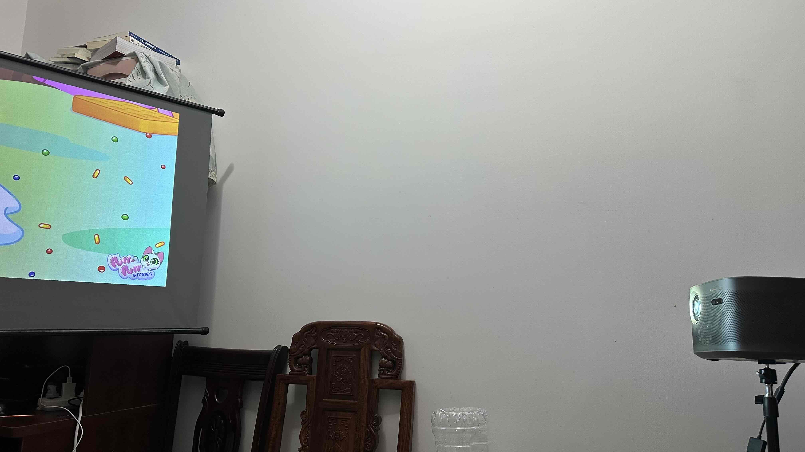
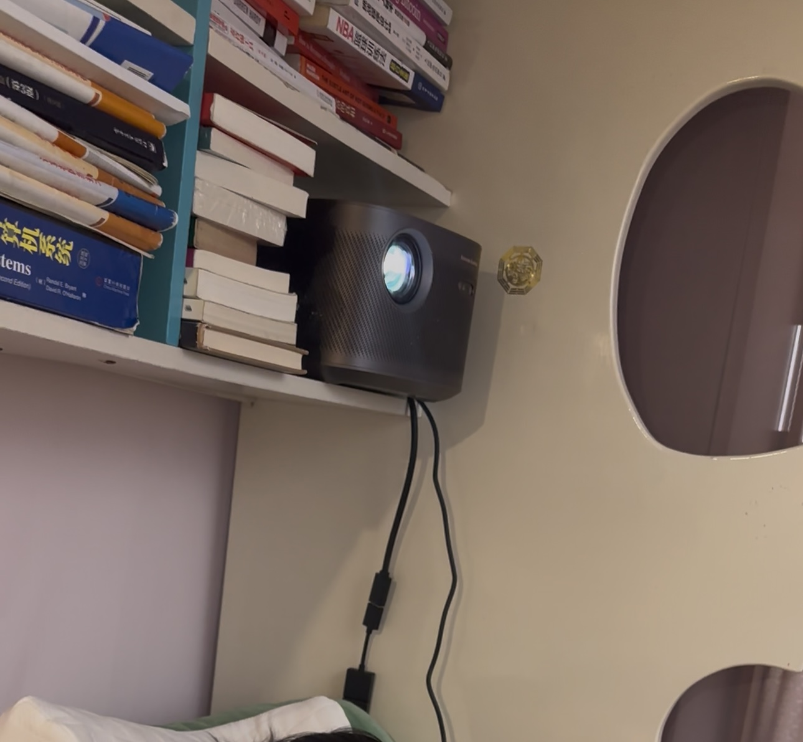

投影仪设置 | 原创，AI翻译
2024年8月底，搬回父母家后，我住进了一间较小的房间。由于怀念投影仪带来的娱乐体验，我决定将它从之前的住所搬过来。
我为投影仪购置了一套三脚架投影装置。我分别购买了两个主要部件：一个集成幕布的三脚架，以及一个单独用于放置投影仪的三脚架。
安装投影仪的过程相当简单。我使用了iPhone上的指南针应用，确保投影仪完全水平。
最初，在使用带幕布的投影架之前，我将投影仪放在床头的架子上，直接投射到墙上。
然而，这种设置要求我将观看位置旋转大约90度，颇为不便。为了避免这种情况，我购买了带幕布的投影架，这样我就能将画面投射到更合适的表面上，而无需调整自己的位置。
 图片来源：自摄
图片来源：自摄
 图片来源：自摄
 图片来源：自摄